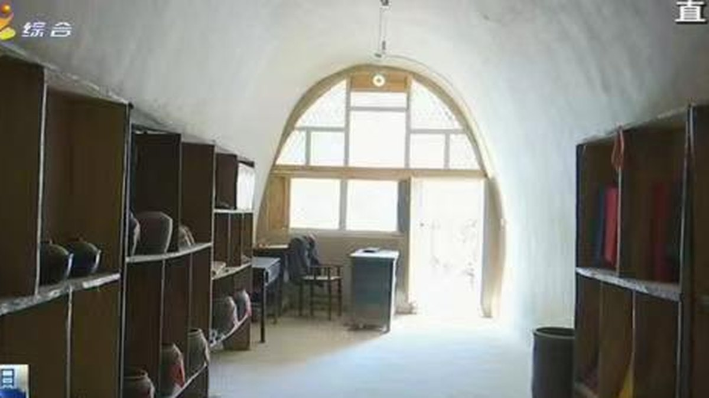

第 3 记 · 一条暗线
“不能挖老百姓的东西！”老雇农武万有挺身在先，1934 年 5 月 10 日（陇东报《阎洼子42烈士：用鲜血书写英雄史诗》）
南梁的山坳里，除了枪，还有柜台、药铺和小路。物资、情报、伤员，都从这些看不见的线上走；而这条线一旦被敌人踩到，代价就是几十条人命。
照金失守之后
1933 年 10 月，照金失守。恢复后的红二十六军开始创建以南梁为中心的陕甘边革命根据地，11 月起在南梁一带活动。
1934 年 2 月，陕甘边区革命委员会在四合台成立，习仲勋任主席，白天章任副主席，下设土地、劳动、财政、粮食、军事、肃反等委员会——陕甘苏区由此初具规模。
杨柳坪：19 岁的习仲勋见到刘志丹
1933 年 3 月初，习仲勋到达耀县杨柳坪，找到了红军陕甘游击队。在这个长满杨树、柳树的小山村，19 岁的习仲勋和年长他 10 岁的刘志丹第一次见面，两位革命者的手紧紧握在一起。
刘志丹说：“干革命还能怕失败？失败了再干嘛！失败是成功之母。”又说：“如果我们像毛泽东同志那样，以井冈山为依托，搞武装割据，建立根据地，逐步发展扩大游击区，即使严重局面到来，我们也有站脚的地方和回旋的余地。现在最根本的一条，是要有根据地。”
阎洼子：42 个人，和一坑没被挖走的物资
1934 年 5 月，红军主力转移外线作战，南梁中心苏区只留下少数游击队员和习仲勋等地方干部坚持斗争。国民党甘肃警备第二旅仇良民部一个团和陇东民团军谭世麟部共约 1000 人，趁机窜入南梁中心区，烧房屋、毁窑洞、赶走群众的牛羊、放火烧粮。
阎家洼子村在通往白马庙川、玉皇庙川、荔园堡川的三岔路口。红军转移时，把 60 支枪、两口袋子弹（约五六千发）、40 套马鞍马蹬，以及群众捐给部队的几千个鸡蛋、数千枚铜元、10 余石粮食，都留在了这里。
接到习仲勋和陕甘边区革命委员会发出的紧急通知后，乡亲们在干部武生荣带领下坚壁清野，在大场边挖了一条长坑，把物资全部埋进去；乡苏维埃主席武海潮把红军打土豪得来的 30 头牛赶进深山密林。
5 月 10 日中午，敌人在大场上发现翻起的新土，动手就挖，很快挖出几口袋粮食和装在铁锅里的 2000 颗鸡蛋。老雇农武万有挺身而出，大吼一声：“不能挖老百姓的东西！”乡亲们一起围上去，坐在土坑上，任凭拳打脚踢、枪把抽打，就是不肯离开。敌人最后抓走武万有，才算作罢。
九眼泉村的李青山是红军修械所工人，人称“李炮匠”。他在院畔望见几个骑兵，以为是红军回来了，跑出去接应，走近才发现是敌兵；搜身时，他与红军联络的信条被搜了出来，当即被五花大绑押到阎家洼子。
谭世麟的民团军为了从他嘴里掏出红军机密和埋藏的物资，用压杠子、灌辣椒水、烧红的烙铁烙，把他折磨得几次昏死，却什么也没得到。13 日晚，李青山、张侯福、曹思聪等 36 名红军游击队员、苏维埃政府干部和革命群众被拉到台地深坑前，一一推了下去。
14 日凌晨，李青山在阎家洼子村半坡被杀害，年仅 34 岁。同一时期，仇良民部与谭世麟民团还用铡刀杀害了共产党员、金岔沟农民联合会主席白阳珍等 6 名乡村干部。这次“围剿”，敌人在阎家洼子村共杀害 42 人。
八十多年过去，李青山的孙子李治虎还保存着爷爷留下的一个铜马勺和一枚生锈的红缨枪头——那是他“为保卫党和红军物资”留下的全部遗物。
柜台后面的交通站
刘坪师家商铺位于华池县紫坊畔乡刘坪村，是陕甘边时期经济发展的一个重要缩影。商铺在活跃边区经济、繁荣市场的同时，还肩负着秘密藏匿、转运根据地重要物资的地下交通站功能。
这类据点不像纪念馆那样醒目，却是根据地得以运转的毛细血管：粮食、布匹、药品、枪械零件，都靠它们一段一段往前送。
1935 年 2 月：两块根据地合成一块
为粉碎国民党军的“围剿”、进一步壮大革命力量，1935 年 2 月，中共西北工作委员会和西北军事委员会成立，统一了对陕甘边和陕北两块革命根据地的领导，实现了两支红军的统一指挥，陕甘革命根据地由此形成。
两块根据地的红军主力发展到约 5000 人，游击队发展到 4000 余人。全盛时期，根据地范围东临黄河之滨、西至六盘山下、北迄长城、南临泾河流域，先后设立陕北省、陕甘省、陕甘宁省和 53 个苏维埃县（市）。
从 1932 年 4 月建立陕甘边革命根据地，到 1937 年 2 月陕甘宁边区改制，这块根据地历时 4 年又 10 个月。

42 个点，是 42 个人
1934 年 5 月那次“围剿”，敌人在阎家洼子村杀害红军战士、游击队员和进步群众共 42 人。下面每一个点，代表一个人。
36 名红军游击队员、干部和群众被推入深坑；白阳珍等 6 名乡村干部被铡刀杀害。

说明：师家商铺没有留下 1930 年代的老照片，这里用的是今天的窑洞内景，只用来交代空间，不冒充历史原照。
师家商铺
紫坊畔乡刘坪村，经济据点兼地下交通站
阎洼子
1934 年 5 月，42 人在此遇害
铜马勺与红缨枪头
李青山烈士的遗物，由孙子李治虎保存
看不见的线
物资、情报、伤员，从山间岔道一段段转运
本页史实清单
- 1933 年 3 月，19 岁的习仲勋在耀县杨柳坪初见刘志丹
- 1933 年 10 月照金失守，红二十六军转向南梁
- 1934 年 2 月四合台革委会成立，苏区初具规模
- 1934 年 5 月，仇良民部一个团与谭世麟民团共约 1000 人袭入南梁；阎洼子 42 人遇害
- 5 月 10 日敌人挖出粮食与 2000 颗鸡蛋，武万有挺身阻拦；13 日晚 36 人被推入深坑，14 日凌晨李青山（34 岁）遇害；白阳珍等 6 名乡村干部被铡刀杀害
- 刘坪师家商铺：经济据点兼地下交通站
- 1935 年 2 月西北工委、军委成立，两块根据地统一；主力约 5000 人、游击队 4000 余人
- 全盛期设 53 个苏维埃县（市），历时 4 年 10 个月
资料来源：华池县人民政府《红色南梁邀您来打卡！》（2023-05-05）；陇东报《阎洼子42烈士：用鲜血书写英雄史诗》（2021-06-07，华池纪检监察网转载）；陕西日报《从“陕甘星火”到“两点一存”》（2021-07-06）